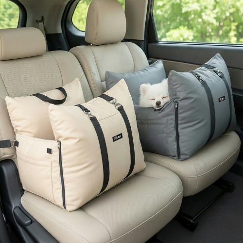
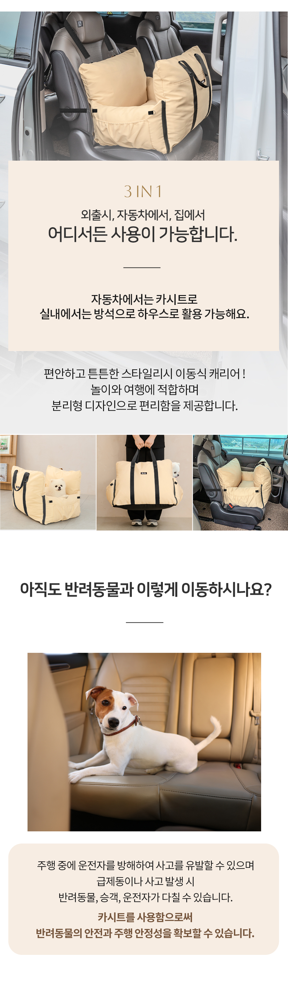
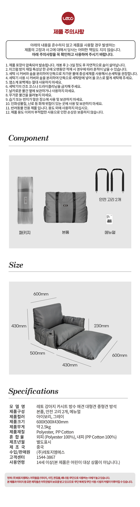
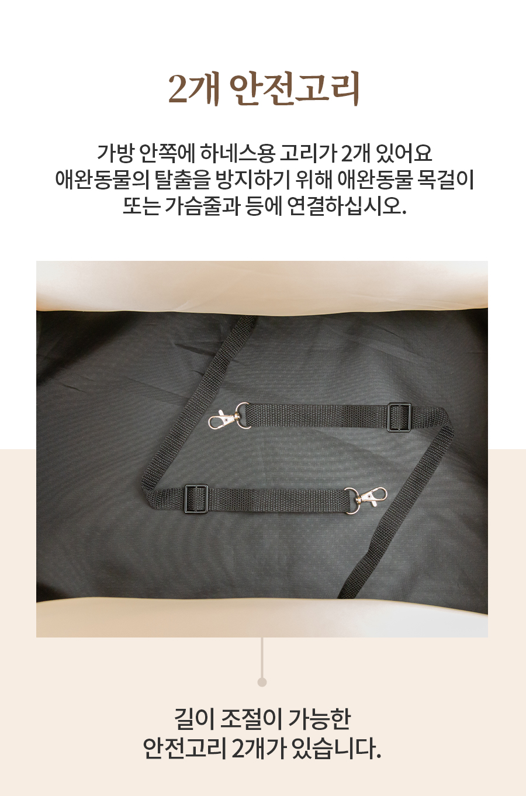

급제동 순간, 본능적으로
조수석을 향하는 오른손
신호가 바뀌어 브레이크를 밟는 순간 아이가 좌석 밖으로 밀릴까 걱정돼, 운전보다 먼저 아이를 붙잡게 됩니다.
반려견과의 불안했던 드라이브, 오늘로 안녕
급브레이크를 밟을 때마다
오른손으로 아이부터 막고 계셨나요?
헤드레스트 한 곳에만 거는 카시트와는 다르게, 헤드레스트와 시트 등받이를 함께 감싸는 2중 고정 스트랩. 네 면의 볼스터 가드가 아이에게 자기 자리 같은 안정감을 선물합니다.

UNCOMFORTABLE DRIVE
말 못 하는 강아지는 사람보다 흔들림과 낯선 움직임에 더 민감합니다.
작은 코너에도 몸을 잔뜩 웅크린 아이를 보며 운전에 집중하기 어려웠던 순간을 떠올려 보세요.

신호가 바뀌어 브레이크를 밟는 순간 아이가 좌석 밖으로 밀릴까 걱정돼, 운전보다 먼저 아이를 붙잡게 됩니다.
불안한 아이가 운전석 쪽으로 다가오면 시야와 조작을 방해해 매 순간 긴장하게 됩니다.
흙 묻은 발과 털, 침 자국까지. 외출 뒤마다 차 시트 청소가 또 하나의 숙제가 됩니다.
THE COMPLETE SOLUTION
일반 동승
급브레이크마다 조수석으로 쏠림 · 운전 중 무릎 위로 올라옴 · 시트에 남는 털과 오염
헤드레스트와 시트 등받이를 함께 감싸 본체의 좌우 쏠림을 줄이는 체결 구조입니다.
입체 볼스터가 감싸주고 기본 내장 안전고리 2개가 동승 중 위치를 더 안정적으로 잡아줍니다.
일상적인 오염은 닦아내고, 커버는 분리해 세탁할 수 있어 외출 뒤 관리가 한결 간편합니다.
카시트·실내 방석·이동 가방으로 상황에 맞춰 활용해 아이에게 익숙한 공간을 이어줍니다.
PROVEN EVIDENCE
감각적인 설명보다 먼저 확인해야 할 것은 우리 차와 아이에게 맞는지입니다. 실측 규격과 장착 순서를 한눈에 확인하세요.

MEASURED SIZE
반려견의 체형과 차량 시트 형태를 구매 전 함께 확인해 주세요.
1-MINUTE SETUP
뒷좌석 중앙 또는 안정적인 자리에 놓습니다.
상단 스트랩을 헤드레스트에 고정합니다.
하단 스트랩을 등받이에 감싸 체결합니다.
하네스에 고리를 연결하고 길이를 조절합니다.
FROM PET PARENTS
실구매자 공개 후기를 바탕으로, 사용 환경에 대한 의견을 보기 쉽게 정리했습니다.
★★★★★“뒷좌석에 단단하게 고정되니 아이도 자기 자리처럼 편하게 앉아 있어요. 장거리 갈 때 훨씬 마음이 놓입니다.”
★★★★★“털이나 가벼운 오염은 바로 닦아내기 좋고, 커버를 분리할 수 있어서 관리 부담이 줄었어요.”
★★★★★“집에서도 방석처럼 잘 쓰고 있어요. 낯선 곳에 갈 때도 익숙한 자리를 챙겨 갈 수 있어 좋습니다.”
FREQUENTLY ASKED QUESTIONS
아이와 차량 환경이 모두 다르기에, 마지막으로 확인하고 싶은 질문을 모았습니다.

헤드레스트와 등받이가 있는 일반적인 차량 뒷좌석에 설치할 수 있습니다. 다만 일체형 헤드레스트, 특수 시트 등은 구매 전 스트랩이 지나갈 공간을 확인해 주세요.
3~7kg 내외의 중소형견을 기준으로 설계되었습니다. 내부 안전고리 2개가 기본으로 내장되어 있어, 아이들의 체형과 하네스 연결 상태를 확인해 안정적으로 사용할 수 있습니다.
원단은 일상적인 물기와 오염을 관리하기 쉬운 생활 방수 코팅입니다. 오염 부위는 가볍게 닦아내고, 필요할 때는 지퍼형 올커버를 분리해 세탁해 주세요.
SPECIAL OFFER & DELIVERY
헤드레스트와 등받이를 함께 잡아주는 레토 3in1 카시트로, 이제 아이도 보호자도 더 편안한 드라이브를 시작해 보세요.
오늘 주문하면 내일 아침 도착 예정 · 주말 나들이 미리 준비하기